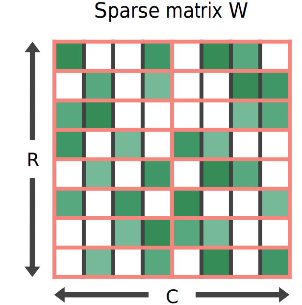

Learning N:M Fine-grained Structured Sparse Neural Networks From Scratch
Sparsity in Deep Neural Networks (DNNs) has been widely studied to compress and accelerate the models on resource-constrained environments. It can be generally categorized into unstructured fine-grained sparsity that zeroes out multiple individual weights distributed across the neural network, and structured coarse-grained sparsity which prunes blocks of sub-networks of a neural network. Fine-grained sparsity can achieve a high compression ratio but is not hardware friendly and hence receives limited speed gains. On the other hand, coarse-grained sparsity cannot simultaneously achieve both apparent acceleration on modern GPUs and decent performance.
In this project, we are the first to study training from scratch an N:M fine-grained structured sparse network, which can maintain the advantages of both unstructured fine-grained sparsity and structured coarse-grained sparsity simultaneously on specifically designed GPUs. Specifically, a 2:4 sparse network could achieve 2× speed-up without performance drop on Nvidia A100 GPUs.
Furthermore, we propose a novel and effective ingredient, sparse-refined straight-through estimator (SR-STE), to alleviate the negative influence of the approximated gradients computed by vanilla STE during optimization. We also define a metric, Sparse Architecture Divergence (SAD), to measure the sparse network’s topology change during the training process. Finally, We justify SR-STE’s advantages with SAD and demonstrate the effectiveness of SR-STE by performing comprehensive experiments on various tasks.
Codes and models can be accessed at https://github.com/anonymous-NM-sparsity/NM-sparsity.
Our experimental results, compared with other state-of-the-art techniques, are shown below: